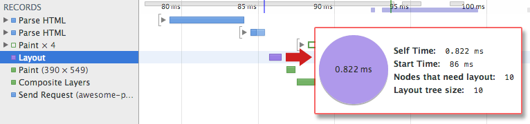

渲染树构建、布局及绘制
CSSOM 树和 DOM 树合并成渲染树，然后用于计算每个可见元素的布局，并输出给绘制流程，将像素渲染到屏幕上。优化上述每一个步骤对实现最佳渲染性能至关重要。
在前面介绍构建对象模型的章节中，我们根据 HTML 和 CSS 输入构建了 DOM 树和 CSSOM 树。 不过，它们都是独立的对象，分别网罗文档不同方面的信息：一个描述内容，另一个则是描述需要对文档应用的样式规则。我们该如何将两者合并，让浏览器在屏幕上渲染像素呢？
TL;DR
- DOM 树与 CSSOM 树合并后形成渲染树。
- 渲染树只包含渲染网页所需的节点。
- 布局计算每个对象的精确位置和大小。
- 最后一步是绘制，使用最终渲染树将像素渲染到屏幕上。
第一步是让浏览器将 DOM 和 CSSOM 合并成一个“渲染树”，网罗网页上所有可见的 DOM 内容，以及每个节点的所有 CSSOM 样式信息。

为构建渲染树，浏览器大体上完成了下列工作：
1、从 DOM 树的根节点开始遍历每个可见节点。
- 某些节点不可见（例如脚本标记、元标记等），因为它们不会体现在渲染输出中，所以会被忽略。
- 某些节点通过 CSS 隐藏，因此在渲染树中也会被忽略，例如，上例中的 span 节点---不会出现在渲染树中，---因为有一个显式规则在该节点上设置了“display: none”属性。
2、对于每个可见节点，为其找到适配的 CSSOM 规则并应用它们。
3、发射可见节点，连同其内容和计算的样式。
注：简单提一句，请注意 visibility: hidden 与 display: none 是不一样的。前者隐藏元素，但元素仍占据着布局空间（即将其渲染成一个空框），而后者 (display: none) 将元素从渲染树中完全移除，元素既不可见，也不是布局的组成部分。
最终输出的渲染同时包含了屏幕上的所有可见内容及其样式信息。有了渲染树，我们就可以进入“布局”阶段。
到目前为止，我们计算了哪些节点应该是可见的以及它们的计算样式，但我们尚未计算它们在设备视口内的确切位置和大小—这就是“布局”阶段，也称为“自动重排”。
为弄清每个对象在网页上的确切大小和位置，浏览器从渲染树的根节点开始进行遍历。让我们考虑下面这样一个简单的实例：
1 | <html> |
以上网页的正文包含两个嵌套 div：第一个（父）div 将节点的显示尺寸设置为视口宽度的 50%，—父 div 包含的第二个 div—将其宽度设置为其父项的 50%；即视口宽度的 25%。

布局流程的输出是一个“盒模型”，它会精确地捕获每个元素在视口内的确切位置和尺寸：所有相对测量值都转换为屏幕上的绝对像素。
最后，既然我们知道了哪些节点可见、它们的计算样式以及几何信息，我们终于可以将这些信息传递给最后一个阶段：将渲染树中的每个节点转换成屏幕上的实际像素。这一步通常称为“绘制”或“栅格化”。
上述步骤都需要浏览器完成大量工作，所以相当耗时。不过，Chrome DevTools 可以帮助我们对上述所有三个阶段进行深入的了解。让我们看一下最初“hello world”示例的布局阶段：

- “Layout”事件在时间线中捕获渲染树构建以及位置和尺寸计算。
- 布局完成后，浏览器会立即发出“Paint Setup”和“Paint”事件，将渲染树转换成屏幕上的像素。
执行渲染树构建、布局和绘制所需的时间将取决于文档大小、应用的样式，以及运行文档的设备：文档越大，浏览器需要完成的工作就越多；样式越复杂，绘制需要的时间就越长（例如，单色的绘制开销“较小”，而阴影的计算和渲染开销则要“大得多”）。
最后将在视口中看到下面的网页：
下面简要概述了浏览器完成的步骤：
1、处理 HTML 标记并构建 DOM 树。
2、处理 CSS 标记并构建 CSSOM 树。
3、将 DOM 与 CSSOM 合并成一个渲染树。
4、根据渲染树来布局，以计算每个节点的几何信息。
5、将各个节点绘制到屏幕上。
我们的演示网页看起来可能很简单，实际上却需要完成相当多的工作。如果 DOM 或 CSSOM 被修改，您只能再执行一遍以上所有步骤，以确定哪些像素需要在屏幕上进行重新渲染。
_优化关键渲染路径_就是指最大限度缩短执行上述第 1 步至第 5 步耗费的总时间。这样一来，就能尽快将内容渲染到屏幕上，此外还能缩短首次渲染后屏幕刷新的时间，即为交互式内容实现更高的刷新率。